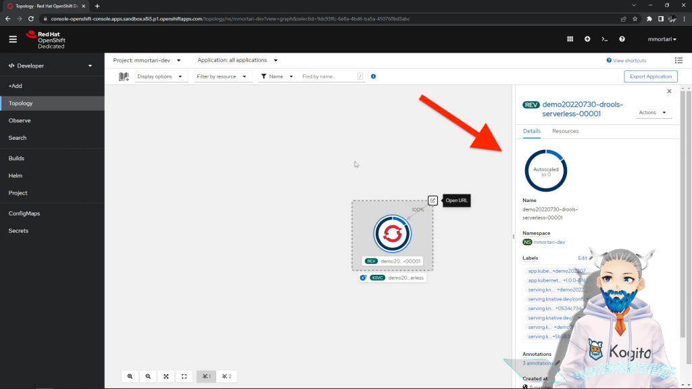

Serverless Drools in 3 steps: Kogito, Quarkus, Kubernetes and Knative!
This short tutorial walks you through the configuration and deployment of a simple Drools serverless application, including autoscaling with scale to zero, thanks to Kogito, Quarkus, OpenShift Serverless with Kubernetes and Knative!
Step 1: Drools app creation with code.quarkus.io
To generate the application as shown in the video, you can use this link: https://code.quarkus.io/?e=org.kie.kogito%3Akogito-quarkus-decisions&e=resteasy-jackson&e=kubernetes&e=container-image-jib
The link will automatically populate for you the basic extensions needed to follow this tutorial.
Step 2: maintain configuration
In the application.properties file, you need to maintain a couple of required configuration, following this guideline:
quarkus.kubernetes.deployment-target=knative
quarkus.container-image.registry=quay.io
quarkus.container-image.group=<your own account>You may decide for the Container Image Registry to opt instead for docker.io or similar, and you will need to configure your own account credentials.
Step 3: deploy your Drools serverless app 🚀
To deploy on Kubernetes, my preference is to deliberately publish a Container Image on a Registry; to follow this strategy, you just need to issue a couple of commands on the terminal.
The first command will produce a Container Image for our Drools serverless application, and publish it on the Registry:
mvn clean package -Dquarkus.container-image.push=trueThen, the second command will effectively deploy that image on the OpenShift cluster:
kubectl apply -f target/kubernetes/knative.ymlThanks to Knative, we have autoscaling including autoscale-to-zero, as it’s shown in the video!

Note: if you are using Windows PowerShell, don’t forget to properly escape the commands, for instance on PowerShell:
mvn clean package "-Dquarkus.container-image.push=true"You can pause the video linked above, to follow step-by-step the commands using Windows ;)
Bonus: Swagger UI OpenAPI
If you want to use Swagger UI and the OpenAPI web based GUI in your deployed app, simply add quarkus-smallrye-openapi in the extensions from step1, and then maintain the application.properties configuration:
quarkus.swagger-ui.always-include=trueWant to learn more?
We hope you enjoyed this lighthearted tutorial 😄
Did you know that formal training is available from Red Hat? Developing Applications with Red Hat OpenShift Serverless and Knative (DO244) teaches you how to develop, deploy, and auto-scale event driven serverless applications on the Red Hat OpenShift Container Platform. Read the course page to learn more.
Conclusions
We have create a simple Drools serverless app with just 3 steps thanks to Kogito and Quarkus; then, thanks to OpenShift Serverless based on Kubernetes and Knative capabilities, we have autoscaling applied, including scale-to-zero.
You can use your own Kubernetes cluster while following this tutorial, but don’t forget you can use a free OpenShift Sandbox to replicate all the steps exactly as shown in the video!
If you enjoyed this simple tutorial, you might be also interested to read this other guide on using the Drools for content based routing on Kafka, using Quarkus and Apache Camel too! Check it out here.
Looking for additional content on Knative serverless function? Check out this new blog post!
Questions?
Let us know your feedback by leaving a comment below! 👋